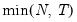

|
|
|
), “size” (), “user” (user specified value), where
is the number of columns of the matrix and
is the number of rows.

rather than
).
 and let
and let  ; then the default maximum lag is given by
; then the default maximum lag is given by